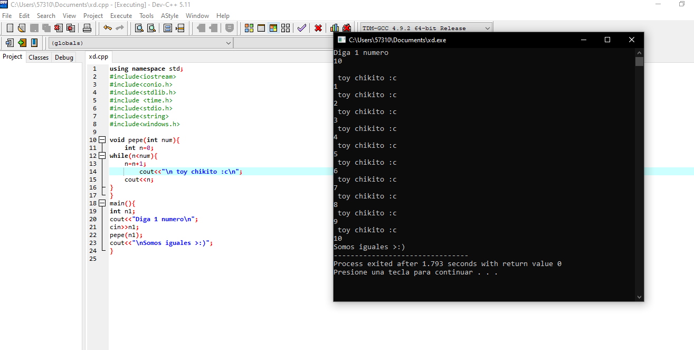

ACTIVIDAD 1 PERIODO 2
En la priemr actividad del periodo 2, hicimos uso de las funciones y ciclos, en la que asignabamos 2 numeros, hasta que el 2do numero no tuviera el mismo
valor que el primero no se acabaria el ciclo.
Esta actividad me parecio sencilla, porque era hacer un ciclo en la funcion(Los ciclos ya los habiamos visto, y la función era igual a todo lo que habíamos visto),
y despues llamarla y asignar valor a lo demás.
